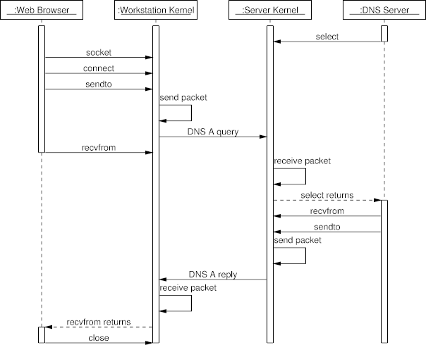

Sequence Diagram Example: A DNS Query
The following diagram, illustrates the operating system calls of
a typical DNS query.
It will appear in the book
Code Quality: The Open Source Perspective (Addison-Wesley 2006).
The diagram was the original motivation behind the UMLGraph sequence diagram
drawing facility.
Diagram

Diagram Source Code
#/usr/bin/pic2plot -Tps
#
# Run as pic filename | groff | ps2eps
#
# DNS query collaboration diagram
#
#
.PS
copy "sequence.pic";
boxwid = 1.3;
# Define the objects
object(B,":Web Browser");
object(W,":Workstation Kernel");
object(S,":Server Kernel");
object(D,":DNS Server");
step();
# Message sequences
active(B);
active(D);
active(W);
active(S);
message(D,S,"select");
inactive(D);
message(B,W,"socket");
message(B,W,"connect");
message(B,W,"sendto");
message(W,W,"send packet");
message(W,S,"DNS A query");
message(B,W,"recvfrom");
inactive(B);
message(S,S,"receive packet");
rmessage(S,D,"select returns");
active(D);
message(D,S,"recvfrom");
message(D,S,"sendto");
message(S,S,"send packet");
message(S,W,"DNS A reply");
message(W,W,"receive packet");
rmessage(W,B,"recvfrom returns");
active(B);
message(B,W,"close");
complete(B);
complete(W);
complete(S);
complete(D);
.PE
 Last change: Tuesday, October 28, 2014 4:26 pm
Last change: Tuesday, October 28, 2014 4:26 pm